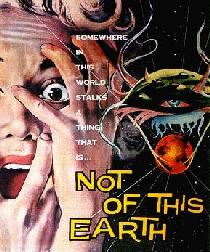
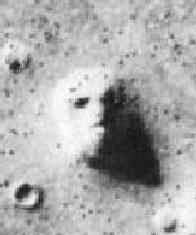
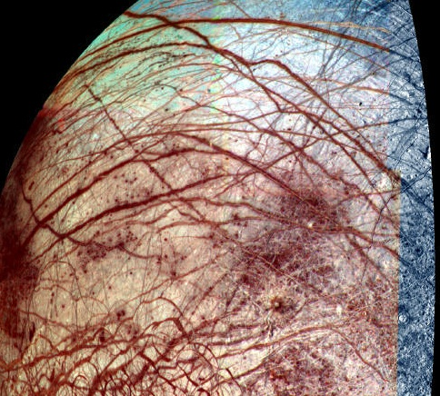
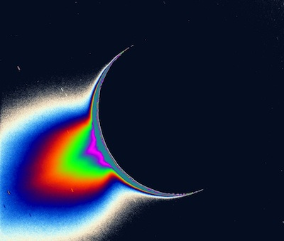
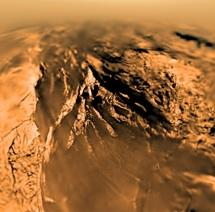
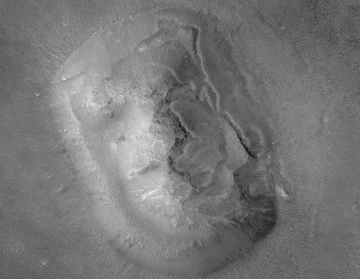

ASTR 1210 (O'Connell) Study Guide 23
|  | LIFE IN THE UNIVERSE |  |
{kind=link}
{kind=link}
|
in the universe? |
A. Perspective
The two questions at the top of the page frame the possibilities for the existence of other advanced species in the universe. When you combine the ideas of life and the universe you reach a stunning conclusion no matter which way you argue:- There are billions of stars in each galaxy and
about 100 billion galaxies within reach of our
telescopes. (See Study Guide 2.)
-
The total number of stars in the observable universe
is of order 10,000,000,000,000,000,000,000 (or 1022).
- Therefore:
- If you believe Earth and humanity are special, uniquely fortunate, or specially created (the "pre-Copernican" view), then we are ALONE in this unimaginably vast cosmos.
- On the other hand, if you believe we are average (the "Copernican" view), then the universe TEEMS with billions of advanced lifeforms.
-
This is not just a modern point of view. It goes back to the ancient
Greeks and was historically advocated by many other writers,
e.g. Huygens, the discoverer of Saturn's moon Titan.
See this translation of his book Cosmotheoros.
|
"To consider the Earth as the only populated world in infinite space
is as absurd as to assert that in an entire field of millet, only one
grain will grow." --- Metrodorus of Chios (ca. 300 BC) "What a wonderful and amazing Scheme have we here of the magnificent Vastness of the Universe! So many Suns, so many Earths..." --- Christiaan Huygens (1698) |
A revolution in prospects for astrobiology
-
Several remarkable discoveries lend credence to this picture:
- 1995+: The discovery of planetary
systems around nearby stars (see Guide 11). We have
discovered hundreds of other planetary systems in the last 25 years.
Many, if not most, stars like the Sun have planets. Despite
the technical challenges, we have already identified many Earth-size
candidate planets.
- In April 2014, the discovery of
Kepler
186-f, the first Earth-sized planet (only 10% larger) in the
"habitable zone" around another star,
was announced.
- 1996: Evidence suggesting the presence of fossil microorganisms on Mars (see Guide 17). This claim is highly controversial. But right or wrong, it has stimulated the development of vigorous research in the rapidly growing field of "Astrobiology."
- The discovery of water-rich environments on Mars (in the past) and under the surfaces of Europa and Enceladus. And the strange and unique but promising hydrocarbon-rich surface of Titan.
- The discovery by radio astronomers of many complex organic molecules in interstellar clouds. The list of these has been rapidly growing over the past 20 years. There are over 220 species of interstellar molecules, many containing more than 8 atoms. These include the amino acid glycine, the RNA base uracil, and the sugar glycolaldehyde. The basic building blocks of biological organisms are widespread in our Galaxy.
B. Life on Earth
Just as our everyday "common-sense" perspective provides no clue to the scale of the real universe, our naive assumptions about the nature of life on Earth, as they existed at the beginning of the scientific age, have been shattered by the evidence:-
Age: Life on Earth is ancient. It has thrived for at
least 3 billion years, according to the fossil record, and the
character of lifeforms has changed radically throughout that time.
- A small set of basic chemical building blocks (large molecules constructed from abundant atoms like H,C,N,O, and a few others)
- The key constituent is carbon, which offers 4 chemical bonds as the basis for forming complex molecules
- Nucleic acids (DNA, RNA): These long strand
molecules provide an enormous capacity for information storage and
chemical control for molecular reproduction
-
Human beings, on the other hand, are brand new.
The genus Homo, which
includes modern humans, has existed for only about 2.5 million years,
or 0.06% of the age of the Earth. Homo sapiens emerged
only about 250,000 years ago.
-
In contradiction to all expectations through about 1900, no
special "vital
force" is required. The laws of physics and chemistry that
govern the structure and functioning of organic systems
are exactly the same as those that govern inorganic
systems.
{kind=link}
350 million years of evolution on Earth: characteristic terrestrial lifeforms
from the Cambrian (500 Myr
ago, left) to the Jurassic (150 Myr ago, right) periods
C. Evolution
The proliferation and diversification of lifeforms is produced by evolution through natural selection for better adapted types (Darwin, Wallace 1858)- The basic principle of evolution is very simple: those
organisms that are best adapted by their genetic makeup to a given
environment thrive and pass those favorable genetics on to subsequent
generations. Dispersion in genetic material in each generation is
guaranteed by chemical mutations. Mutations that are accidentally
favorable are amplified by natural selection and propagate forward
into modified species. On Earth, there have been hundreds of millions
of generations preceding the familiar lifeforms we see around us
today. The consequent adaptation to an immense variety of
environmental niches is profound.
- The fossil record is now fabulously rich (250,000 species)---vastly more so than in Darwin's day---and clearly shows the radical change of lifeforms on Earth through time. Huge fossil collections exist for epochs between 10,000 and 500,000,000 years ago.
- Geological age-dating by radioactive isotopes is now highly accurate and graphically reveals the enormous stretch of time over which evolution on Earth has been working.
- Genetics, the mechanism by which inherited characteristics are passed from one generation to the next, was mysterious in Darwin's time but is now thoroughly understood, as are the causes of the mutations that engender changes in species.
- DNA mapping has recently demonstrated astonishing chemical
similarities between humans and other higher lifeforms. We share
98.8% of our genes with chimpanzees.
-
It is now clear that humans are part of a
continuum of life on Earth, not a special class.
This is probably the most stringest test of evolutionary biology ever
made, and it passed with flying colors. Darwin, Huxley, and the other
leading biologists up to 75 years ago could not have imagined how
precise or conclusive such chemical tests of the evolutionary
principle could be.
- An apparent contradiction between the age of the Sun, in Darwin's time thought to be only about 30 million years, and the geological/fossil time-scale (much older) was resolved when physicists realized (ca. 1940) that the source of the Sun's energy was nuclear fusion, for which there is abundant fuel to maintain the Sun's enormous luminosity for much longer periods. The Sun's age is now estimated to be about 5 billion years, and the solar and geological time-scales are now in good agreement.
- Detailed measurements of the brightnesses and colors of stars in star clusters permit us to age-date their formation times. These range from about 10 million years for clusters in active star-forming regions to 13 billion years in the case of "globular clusters" like M80.
- By using powerful telescopes to study the Hubble Deep Field and other distant regions, astronomers can observe the universe as it was billions of years ago. No other field of science is able to make such direct observations of the distant past. Not only can we see the past, we also can determine how different the contents of the universe were at earlier times and trace how they change with "lookback time." There is no doubt that the universe has evolved.
- Spacecraft observations of the cosmic background radiation from the Big Bang have recently determined the age of the universe to be 13.7 billion years.
{kind=link}
{kind=link}
-
They
are not important among active scientists, who accept evolution
as a foundation of modern science. Scientists involve themselves in
these controversies only insofar as they try to protect the integrity
of their disciplines and of science education from political
intrusion.
In these debates, evolution is often mistakenly conflated with the
question of the origin of life on Earth. Scientists do not
presently have a good understanding of how (or even whether) life
originated on Earth. That discussion is hypothetical. The evidence
for evolution (that is, for a change over time) of lifeforms on
Earth, however, is entirely independent of the question of life's
origins. You do not have to know where a sapling came from in
order to know that a tree is growing.
D. Origin of Life on Earth?
As just noted, we do not have a good understanding of how life originated on Earth. Given what we do know, however, it is plausible that the chain of life began at the molecular level with molecular evolution from simple, abundant, pre-organic chemicals.- Probably in oceans, a dense medium with vast quantities of basic raw materials.
- Biosynthesis requires sufficient sources of energy, but these are abundant in the early Earth environment: solar radiation, vulcanism, ocean vents, lightning, etc.
- The plausibility of early molecular evolution was demonstrated in a classic 1953 laboratory simulation: the Miller-Urey experiment. Starting from common pre-biotic ingredients thought to be characteristic of the early Earth, sugars, amino acids, and DNA bases were generated in only a few days. This showed how easy it is to start a chemical synthesis sequence that can lead to organisms.
- Note that once it begins, molecular evolution is subject through natural selection to the same kind of acceleration toward survivable and proliferating forms as are biological organisms. Molecular autocatalysis probably plays an important role here.
- Discoveries of "extremophiles" --- organisms thriving under unexpectedly harsh conditions of temperature, pressure, or acidity --- demonstrate how robust and adaptable simple life forms can be. The best-known examples are bacteria that live at temperatures of 120C or pressures of 1000 bars in submarine hydrothermal vents or deep ocean trenches.
- For 3/4 of its history, life on Earth consisted only of very simple organisms, entirely unlike the profusion of advanced types seen today. Numerically, the simple organisms, starting with bacteria and viruses, vastly outnumber the more complex types even now.
{kind=link}
{kind=link}
- We have discovered that organic molecules, produced by natural chemical processes, are present in large quantities even in ostensibly hostile cosmic environments such as meteorites or interstellar clouds. These could be the building blocks for biogenesis throughout our Galaxy.
- An obvious way for lifeforms to propagate in a given planetary system is through comets or meteoroids, as the "SNC" meteorites from Mars vividly demonstrate. Meteoroids could have spread Mars life to Earth or vice versa. We could be Martians!
- The notion of panspermia simply pushes the question of how life
originated back one level. Panspermia has occasionally been very
controversial -- for example, when astronomers
Chandra
Wickramasinghe and Fred Hoyle suggested that infall of
interplanetary dust grains carrying nucleic acids might have caused
disease outbreaks on Earth. But at present we cannot determine
whether life originated on Earth itself or came here from
elsewhere.
-
Introducing the possibility of panspermia doesn't, unfortunately,
resolve the important question of whether early terrestrial conditions were
favorable to the origin of Earth-like lifeforms. If life came here
from elsewhere, it could have been because the early Earth was hostile
to generating lifeforms. Or, Earth could have been perfectly
hospitable to biogenesis, but the external seeding occurred before
it could take place.
- For more information on panspermia, click here.
{kind=link}
The "habitable zones" for Earth-like planets surrounding
four different types of stars are shown in light blue;
"F" stars
are more massive and hotter than the Sun, "K" and "M" are less massive
and cooler.
The volume of the habitable zone increases for hotter
stars.
E. Life Elsewhere in Our Solar System
Are there plausible biospheres elsewhere in the Solar System?Requirements
- Raw materials;
- A dense medium (preferably water, but other liquids/dense gases are possible);
- A protected environment, maintained in the appropriate temperature/pressure range;
- Energy sources; primarily sunlight, but volcanic vents, lightning, interior heat, etc. are alternatives;
- Sufficient time (100 Myr-1 Gyr?)
Habitable Zone
- For a particular type of parent body (terrestrial planet, Jovian
planet, Jovian satellite, comet), we can define a habitable
zone as those distances from the parent star for which that
type can offer a comfortable, long-lived biosphere, neither too hot
nor too cold, for life to develop. For Earth-like life, we believe
that biospheres require the presence of liquid water.
In the solar system, the habitable zone for Earth-like planets
with open bodies of liquid water on their surfaces
ranges from about 0.9 AU to 1.4 AU, covering the Earth's orbit
(of course) but not reaching to either Venus or Mars. See the diagram
above.
-
Here
is a brief discussion of the factors entering the determination of an
Earth-like habitable zone and a chart that shows where a number of the
exoplanets now known fall. (From Sky & Telescope, March
2017.)
For stars hotter or brighter than the Sun, the zone would be farther
from the star and larger in volume; and the converse for cooler
or fainter stars.
The interest in searching for exoplanets around "cool dwarf" stars,
such as the "K" and "M" stars shown in the diagram above, arises from
the fact that their close-in habitable zones are more easily probed
with current planet detection techniques than those of brighter
stars (see
Study Guide 11). They are also the most
numerous types of stars.
|  |  |  |
{kind=link}
{kind=link}
{kind=link}
Possible biospheres on the outer satellites: (Left) The
icy surface of Europa (pseudocolor, Galileo mission);
(Middle) The
water vapor geysers of Enceladus (pseudocolor, Cassini mission);
(Right) The hydrocarbon-rich surface of Titan, as viewed by the
descending Huygens probe.
Possibilities
- Venus: Its high-temperature, high-pressure, and corrosive atmosphere is sufficient to sterilize the surface of Venus of all Earth-like life, so it was long ignored as a possible biosphere. But in September 2020, astronomers announced the tentative discovery of the molecule phosphine (PH3) in the cloud layers of Venus' atmosphere. On Earth, there is no known non-biological source for phosphine; so it was suggested that there are microorganisms thriving in Venus' atmosphere. Within six weeks, other groups cast doubt on the detection by reanalyzing the same datasets. However this debate turns out, it has been useful in reminding us that there are regions in Venus' atmosphere that offer temperate conditions and could possibly harbor floating lifeforms.
- Mars: There is plausible evidence for a biosphere > 1 Gyr ago with abundant water (see Guide16). SNC meteorites provide some evidence for microorganisms. The surface is probably too cold and dry now for life, and the absence of ozone in the present-day atmosphere allows damaging solar UV flux to penetrate to the surface. but there could be warm underground water reservoirs that are more promising.
- Jupiter, Saturn atmospheres: Results from the Galileo probe (1995), which sampled the outermost layers of Jupiter's atmosphere, were not promising but don't exclude a biosphere.
- The satellites Europa (J) and Enceladus (S) each have evidence for a liquid water reservoir/ocean lying beneath the visible crust of ice. These are probably the most promising sites for bio-exploration after Mars. Ganymede, Jupiter's largest moon, has just recently been shown to contain a subsurface ocean.
- Titan (S) has an extraordinary hydrocarbon-rich atmosphere and surface, which is a possible biosphere. The Cassini mission demonstrated the presence of liquid hydrocarbons (methane, ethane) on Titan, and some scientists think "methanogenic" lifeforms might exist there. Most believe the very low temperatures (-180 degrees C) would preclude living organisms on the surface. As in the case of Europa, Ganymede, and Enceladus, however, deep reservoirs with more favorable temperatures are possible. Here is a prospectus for exobiology on Titan.
- Comet nuclei: these icy bodies, often with a coating of organic molecules, could act as "portable reservoirs" of organisms; however, temperatures are normally very low.
F. Intelligent Life Elsewhere
Warning
-
This is a fascinating but virtually 100% speculative subject. There
is a paucity of facts, understanding, and imagination, and that leads
to a wealth of conjecture and controversy.
The Drake Equation
-
The Drake Equation, named after
astronomer Frank Drake, was an early (1961) "rough order of magnitude"
estimate of the number of advanced technical civilizations in
our Galaxy capable of undertaking interstellar communication.
"Communication" implies the ability to transfer information but not
necessarily to undertake travel between stars. The most basic form of
communication involves electromagnetic radiation.
Here is a
simplified list of the elements in the Drake estimate based on our
current understanding:
- There are 100 billion stars in our Galaxy
- Assume 0.001% - 5% of the stars have Earth-like planets
in the habitable zone.
- Support? The recent detection of thousands of extra-solar
planets. Even though many of these are Neptune-class or larger,
rather than Earth-size, most astronomers expect that the fraction of
stars with Earth-like planets will prove to be of order 5% or larger.
This is at the high end of the range considered plausible over the
last 50 years.
The Kepler mission has identified
many planet candidates with sizes near Earth's, most of them slightly
larger. Some of these are in or near the habitable zones of their
parent stars. Although the volume of the habitable zones of stars
cooler than the Sun ("K and M dwarf stars") is smaller than ours, such
stars are much more common in the Galaxy than are Sun-like stars, so
these are receiving increased scrutiny.
The TESS mission, launched
in April 2018, should discover many more planets hosted by small stars
near the Sun. The latest results are discussed in
this article.
- Assume all of those develop life leading to advanced civilizations
(i.e. assume Earth is average)
- Support? "Earth is average" is the Copernican assumption,
which has proved so successful in studies of the structure of
our inorganic universe on the scale of the Solar System, our Galaxy,
and extragalactic space. However, there is great controversy about
whether this assumption applies to biology. We have very little intuition
here, and some biologists would argue that the chances of developing
technological species on a given Earth-like planet are very small.
- Assume the communication phase lasts 10,000 years.
-
Note: we have only recently entered this phase. It has been only 90
years since we developed commercial radio stations that could be
detected over interplanetary distances. Our artificially generated
electromagnetic radiation would be the most definitive marker
of advanced lifeforms on this planet to an exernal observer. Human EM
signals are now propagating out through the Galaxy, with the most
distant signals being about 90 light years away.
- Combining all of these factors ===> 10 - 10,000 communicating civilizations in our Galaxy
- ===> Distance to nearest: 10,000 - 1000 light years
{kind=link}
- One obvious source of bias is the danger of carbon or
planetary chauvinism. For instance, it has often been suggested that
silicon, which also offers 4 chemical bonds, could be utilized by
lifeforms in place of carbon. The numbers we used above also
assume that intelligent life can develop only on terrestrial planets.
But there's no compelling reason that intelligent life
would be confined to planets or even planetary systems. Why not a
sentient interstellar gas cloud? This idea was explored in the famous
science fiction
novel The Black Cloud by
astronomer Fred
Hoyle. In the story, the super-being in the
Cloud expresses surprise that
intelligence could develop in so adverse an environment as the surface
of a planet.
{kind=link}
Interstellar migration/exploration:
-
The estimated separation between advanced civilizations, 1000-10000
LY, is obviously tremendous. But it could be traversed
with foreseeable technology on cosmically short time scales.
(Remember that 10 million years is a "short time" in the cosmic
context!) Even at propagation velocities far below the speed of
light, stable civilizations could "rapidly" explore the Galaxy.
-
Here's a relevant, even amazing, fact: We human beings managed to
launch four interstellar spacecraft in the first 20 years of the space age!
The four
Pioneer
and Voyager spacecraft, sent to study the Jovian planets, will
all leave the Solar System, as will the New Horizons Pluto mission.
-
The most distant manmade object, the Voyager 1 spacecraft, is now 11.6
billion miles (125 Astronomical Units) from Earth and officially
entered interstellar space in September 2013.
-
A famous question, now called the Fermi
Paradox because it was first raised by physicist Enrico Fermi in
the 1950's, is therefore "Where is everybody?"
-
What Fermi meant was that if interstellar expansion is possible for
thousands of Galactic species, they should have reached here long ago.
There ought to be aliens cluttering up the Solar System. We don't see
them -- there is no credible evidence for alien visitation (see
below) -- so are the estimates for the number of advanced
civilizations and our expectations regarding interstellar travel badly
wrong or naive?
Entire books have been written on possible solutions (all sheer
speculation) to the problems raised by Fermi's question. I give my
favorite answer below.
SETI = "Search for Extraterrestrial Intelligence"
-
The best alternative to interstellar travel to assay the prevalence of
life in the nearby universe would be EM communication, probably
in the radio or optical EM bands
Several passive listening, radio search
programs are ongoing. Most sophisticated are those operated by
the SETI Institute, once a
well-financed NASA program but killed by Congressional scepticism and
now running on private contributions.
When SETI programs were first conceived 50 years ago, it was assumed
that we might most easily detect "leakage" radiation from
civilizations employing radio- or TV-like broadcasting for
communication. But we ourselves have backed away from radio/TV
broadcasts, and today orders of magnitude more information is being
conveyed over cable and fiber optic systems that don't radiate
significantly. Therefore, if we do detect ETI through EM
communications, it is more likely to be in the form of
beacons
deliberately established to attract attention rather than "leakage."
These are also likely to be products of the most successful and
advanced of (possibly) many Galactic civilizations.
{kind=link}
G. Alien Artifacts?
Most people assume that if spacefaring aliens are active today in the vicinity of the Earth, or had arrived anytime over the last few 100 million years, there should be concrete evidence of that visitation -- artifacts of extraterrestrial intelligence. In fact, you can find many gigabytes on the Internet devoted to claims that there is "good" evidence for visitations. But, so far, these have not stood up under scrutiny. Here are two prominent examples of a supposed alien presence in the Solar System:{kind=link}
- UFO's
-
See Guide 18 and links therein. There is
no credible evidence that an intelligent species (other than our own)
is involved in the "Unidentified Flying Object" phenomenon. An
overwhelmingly strong media
influence governs the number and similarity of reports. Publicity
can even provoke mild mass hysteria (e.g. alien abduction
claims).
- The face on Mars
-
This is a strange and interesting feature in the
Cydonia region of Mars that was imaged (poorly) by the Viking
spacecraft in the 1970's. In a partially-illuminated state, it looked
like a gigantic, carved human head. One of the original Viking images
is shown below (left panel). This elicited speculation about
civilizations on Mars, the more responsible of which can be sampled
here.
In April 1998, the Mars Global Surveyor was retargeted to image the same region at
much higher resolution.
Several good images were returned, showing the fully illuminated "face"
to be an unambiguously natural feature. See the right panel
below. (Some of the intriguing features in the original image, like
the "headdress," were actually data drop-outs.) Yet
better images have been
more recently obtained by the Mars Express orbiter. No other candidates
for alien artifacts on Mars or other planets are credible either.
You can find trenchant commentary by Phil Plait (the "Bad Astronomer")
about the (needless) continuing controversy over this subject
here.
{kind=link}
{kind=link}
{kind=link}
|  | ||
{kind=link}
{kind=link}
- Tabby Boyajian's Star Tabby's Star is an outwardly inconspicuous star in the large Kepler survey field. It shows a strange, non-repeating pattern of eclipses some of them much too large to be from planet-sized bodies. The star has received intense scrutiny, and it has recently been discovered to be declining slowly in (uneclipsed) brightness in a way that normal stars do not. It is very unlikely that an alien mega-structure is responsible for the weird properties of Tabby's Star, but it must be admitted that none of the more conventional explanations (e.g. debris from a planetary collision or a swarm of comets) explain the observations either. So far, the star is an astronomical mystery.
H. The Recognition Chasm
There is a much more fundamental problem in communicating with alien civilizations than their distance from us. It presents major obstacles to even recognizing them in the first place.- The mean age difference between two Galactic species is likely to be 100's of millions of years.
- Given favorable conditions, successful advanced lifeforms may have continued evolution and intellectual/technical development for a large fraction of that time. (Once they reach a certain level of development, they become immune to the more serious astronomical hazards for lifeforms, such as asteroid impacts and stellar evolution.)
- The age separation is much more important than the
spatial separation
-
====> us : them ~ goldfish : us
- Since recognition and communication is possible only for
cultures in close intellectual proximity,
-
====> Aliens would appear to be natural
phenomena.
So, my favorite answer to Fermi's question, "Where is everybody?"
is:
"They're here, but we don't recognize them."
I. Epilogue
- A quote from Stanley Kubrick, director of "2001 -- A Space
Ddyssey," on the possibilities for advanced lifeforms in the
universe:
| "Now, the Sun is by no means an old star, and its planets are mere children in cosmic age, so it seems likely that there are billions of planets in the universe not only where intelligent life is on a lower scale than man but other billions where it is approximately equal and others still where it is hundreds or thousands of millions of years in advance of us. When you think of the giant technological strides that man has made in a few millennia -- less than a microsecond in the chronology of the universe -- can you imagine the evolutionary development that much older life forms have taken? They may have progressed from biological species, which are fragile shells for the mind at best, into immortal machine entities -— and then, over innumerable eons, they could emerge from the chrysalis of matter transformed into beings of pure energy and spirit. Their potentialities would be limitless and their intelligence ungraspable by humans." |
Reading for this lecture:
-
Study Guide 23
Bennett textbook, Chapter 24
Optional Reading:
-
Are We Alone? by James Trefil & Robert Rood (Clemons Lib: QB 54.R55)
The Biological Universe: The Twentieth Century Extraterrestrial Life Debate and the Limits of Science by Steven J. Dick (SciEngr Lib: QB 54.D47 1996).
Rare Earth: Why Complex Life is Uncommon in the Universe by Peter Douglas Ward & Donald Brownlee. (QB54.W336.2000).
Lonely Planets: The Natural Philosophy of Alien Life by David Grinspoon
Life in the Universe by Jeffrey Bennett and Seth Shostak (SciEngr Lib: QH327.B45 2007).
Astrobiology: A Multi-Disciplinary Approach by Jonathan Lunine (SciEngr Lib: QH325.L86 2005)
Web Links:
-
Talk.Origins (a thorough web discussion
of evolution vs. creationism)
Science, Evolution, and Creationism (2008 report from the National Academy of Sciences)
Essay on Intelligent Design Creationism (Donald Simanek) Good summaries of development of life on Earth: NASA's Astrobiology Program
Encyclopedia of Astrobiology, Astronomy, & Spaceflight
Mars Global Surveyor Press Releases on "Face on Mars" The SETI Institute
"Archaeology, Anthropology, and Interstellar Communication" (NASA report by Douglas Vakoch, 2014)
The Planetary Society SETI Page
"The Great Silence" (about the Fermi Paradox, by David Brin)
Lecture on "The Eerie Silence" (about the Fermi Paradox and SETI, by Paul Davies)
Report of the NASA Workshop on the Search for Technosignatures (2018) The Black Cloud, (online copy of the Fred Hoyle novel) When will humanity first discover extraterrestrial life? (21 experts give their opinions) Interpretations of "2001: A Space Odyssey": human contact with alien technology Centauri Dreams (site devoted to the potential of interstellar exploration)
Initiative for Interstellar Studies (similar)
The 100-Year Starship Project
Breakthrough Starshot (project to send a small instrument package to Alpha Centauri) Astronomy 1250: Alien Worlds
Astronomy 3420: Life Beyond the Earth
Guide 18: Life on Mars, War of the Worlds, and the UFO phenomenon (O'Connell)
 Previous Guide
Previous Guide
|
 Guide Index
Guide Index
|